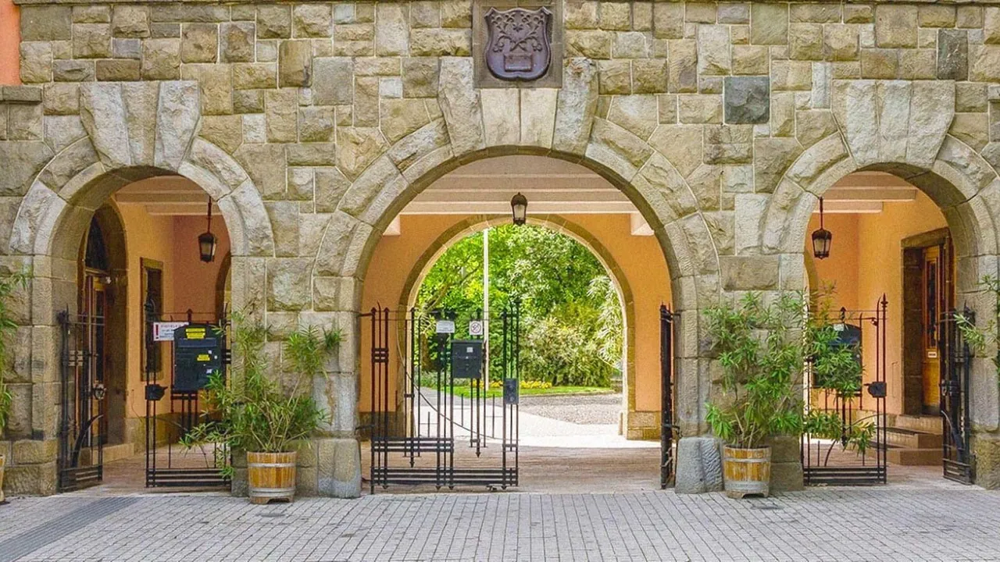
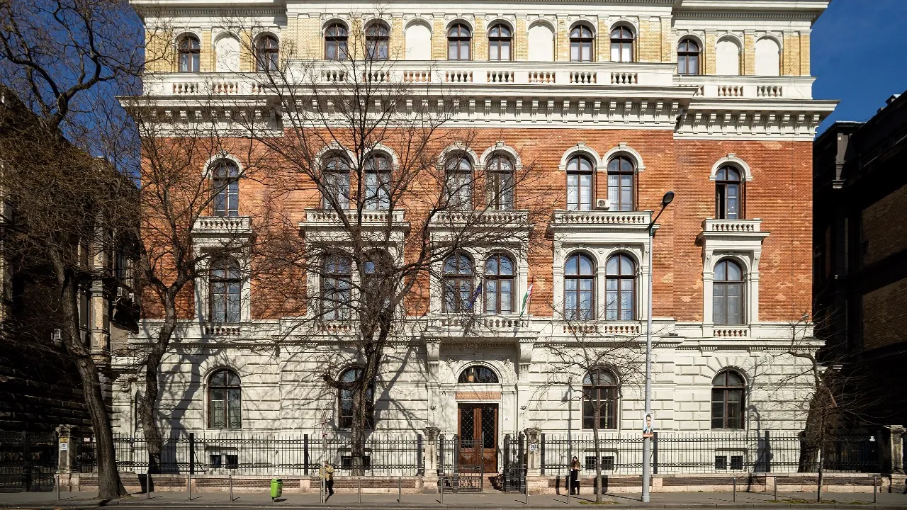
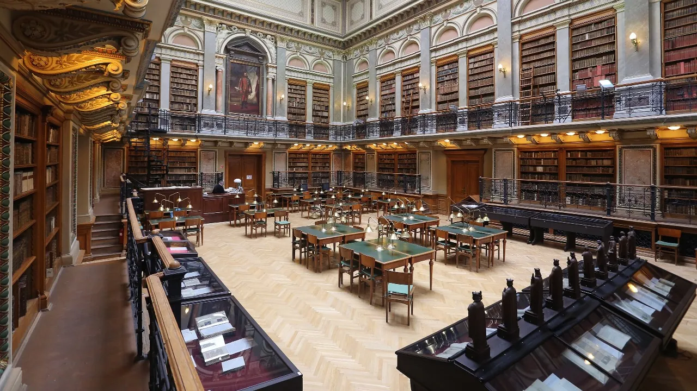
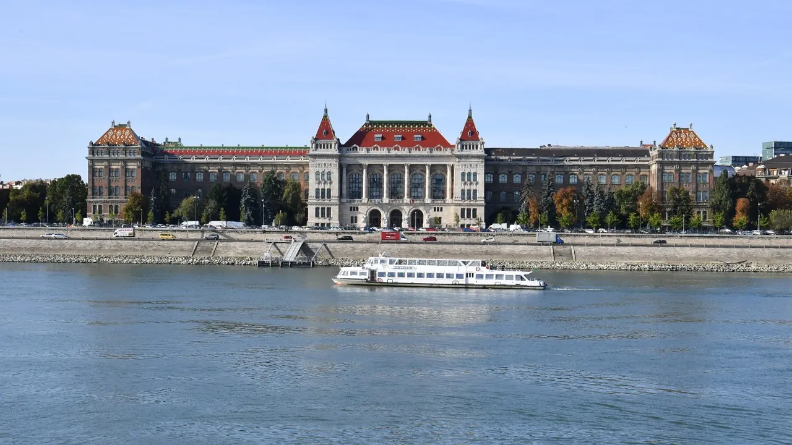
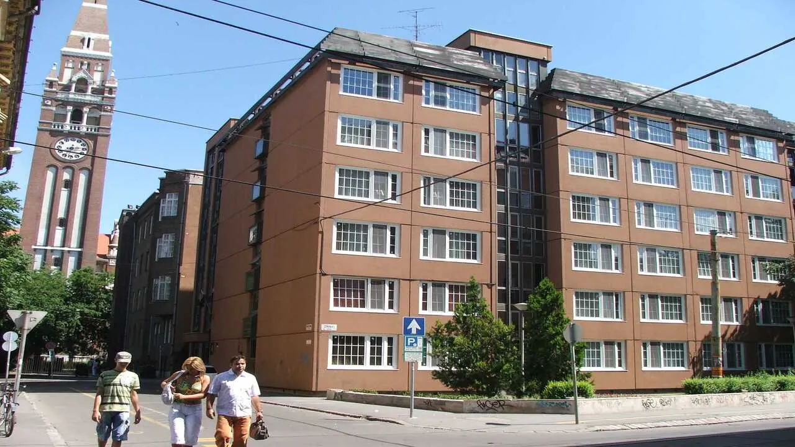
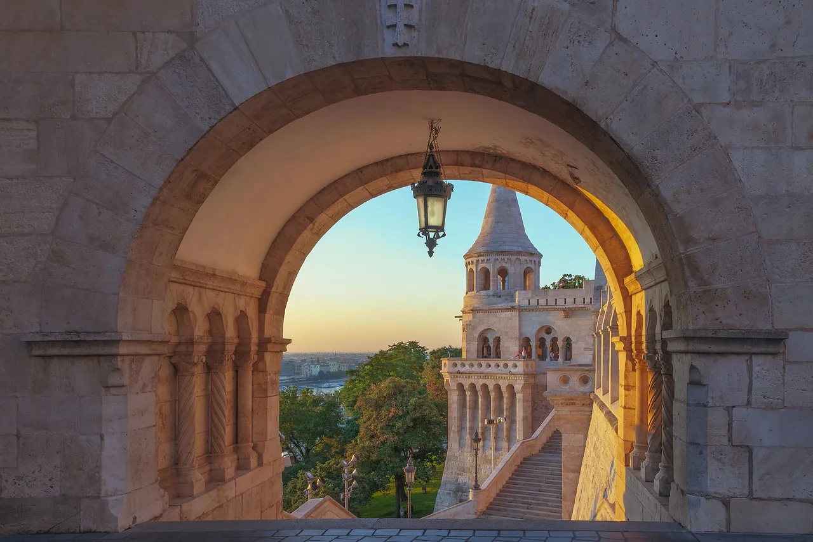

Yurt dışında eğitim planlayan öğrencilerin en önemli sorularından biri şu: Kaliteli bir eğitimi ulaşılabilir bir bütçeyle hangi ülkede alabilirim? Macaristan; İngilizce eğitim seçenekleri, YKS puanı gerektirmeyen başvuru süreci ve Batı Avrupa'ya kıyasla çok daha avantajlı eğitim ve yaşam maliyetleriyle güçlü bir alternatif sunar.
Hun Education olarak 1999'dan bu yana yalnızca Macaristan'da eğitim alanına odaklanıyoruz. 20 seçkin üniversitede sunulan 490 İngilizce program arasından öğrencilerimizin hedeflerine en uygun seçeneği belirliyor; başvurudan kabul ve vize sürecine kadar her adımda yanlarında oluyoruz.
Rakamlarla Macaristan
Macaristan neden öne çıkar?




Macaristan üniversiteleri yeni kurulmuş kurumlar değil. Pécs Üniversitesi 1367'de kuruldu, Semmelweis'te tıp eğitimi 1769'a dayanır ve Budapeşte Teknoloji ve Ekonomi Üniversitesi dünyanın en eski teknik üniversiteleri arasında sayılır. Bu köklü gelenek bilimde de karşılığını buldu: Macar asıllı bilim insanları bugüne kadar 16 Nobel Ödülü kazandı, Szent-Györgyi Albert 1937'de C vitamini üzerine yaptığı çalışmayla ödüle layık görüldü. Tükenmez kalem de Rubik küpü de bu ülkeden çıktı.
Sizin açınızdan tarihten daha önemlisi ise şu: bu fakülteler uluslararası öğrenciyle çalışmaya alışkın. Tıp, diş hekimliği ve mühendislikte İngilizce programlar onlarca yıldır yürütülür; dersler, sınavlar ve idari süreçlerin tamamı Macarca bilmeden gelen öğrenciye göre kurulmuş durumda. Yani yolu ilk açan siz olmayacaksınız.
Türk öğrencilerin Macaristan'da okuması da yeni bir eğilim değil. Osmanlı'nın son döneminden Cumhuriyet'in ilk yıllarına uzanan bir geçmiş var ve bugün ülkede her yıl büyüyen bir Türk öğrenci topluluğu bulunur. Macaristan genelinde 40 bine yakın uluslararası öğrenci öğrenim görür; gittiğinizde sizden önce gelmiş, aynı yollardan geçmiş arkadaşlar buluyorsunuz.
Dil konusunda ise kafanızın rahat olmasını isteriz. Kataloğumuzdaki her program hazırlık yılından yüksek lisansa kadar İngilizce yürür ve üniversitelerin çoğu dil belgesi bile istemez, kendi mülakatını ya da çevrim içi sınavını yapar. Belge isteyen okullarda IELTS 5, 6 veya 6,5 görülür. Seviyeniz henüz yeterli değilse endişelenmeyin; üniversitenin kendi İngilizce hazırlık yılından girip programa oradan geçebiliyorsunuz.
Eğitim ve yaşam maliyetleri

Macaristan'ı öne çıkaran en somut sebep bütçe. Aşağıdaki rakamlar lisans seviyesinde, yaşam giderleri dahil, tam ücret ödeyen bir uluslararası öğrencinin yıllık toplam bütçesini gösterir. Aynı diplomayı Batı Avrupa'da almak çoğu durumda bunun iki katına yakın bir bütçe gerektirir.
| Kalem | Tutar |
|---|---|
| Öğrenim ücreti | 3.000 – 5.000 € |
| Yaşam giderleri | 4.000 – 8.000 € |
| Yıllık toplam | 8.500 – 14.000 € |
Aralığın alt ucu, Budapeşte dışında okuyan ve yurtta kalan bir öğrenciye karşılık gelir; üst ucu ise başkentte stüdyo dairede yaşayan bir öğrenciye. Yani bütçenizi büyük ölçüde kendi tercihleriniz belirler. Bu rakamları üniversite tarifelerinden ve öğrencilerimizin gerçek harcamalarından derliyor, her akademik yıl yeniden doğruluyoruz.
Bütçenizi paylaşın, hangi programlara girebileceğinizi ilk görüşmede söyleyelim. Ön Görüşme Al
Avrupa'nın ortasında bir öğrencilik

Macaristan'da okumak yalnızca bir diploma almak anlamına gelmez. Budapeşte'den Viyana, Bratislava, Zagreb ve Belgrad kara ya da tren yoluyla birkaç saat uzaklıkta; çoğu Avrupa başkentine kısa bir uçuşla varıyorsunuz. Ülke AB ve Schengen üyesi olduğu için öğrenci ikametinizle bölgede seyahat etmek son derece kolay. Uzun yaz tatilleri ve öğrenci bütçesine uygun tren bağlantıları, diploma yıllarınızı aynı zamanda bir Avrupa deneyimine dönüştürür.
Şehirlerin kendisi de bu deneyimin bir parçası. Buda Kalesi ve Tuna kıyısı UNESCO listesinde yer alır, Sziget her yaz Budapeşte'de Avrupa'nın en büyük müzik festivallerinden biri olarak düzenlenir ve Balaton Gölü yaz aylarında öğrencilerin buluşma noktasına dönüşür. Günlük hayata gelirsek, bir öğrencinin yılı kabaca şöyle geçer:
| Başlık | Ne bekleyin |
|---|---|
| Konaklama | Üniversite yurdu aylık 60 €'dan başlar; paylaşımlı dairede oda ≈350 €; stüdyo ≈550 € |
| Ulaşım | Budapeşte'de yoğun metro, tramvay ve otobüs ağı; öğrenci kartı aylık ≈120 € |
| Sağlık | Sağlık sigortası kayıt için zorunlu, yıllık ≈300 € |
| Topluluk | Budapeşte, Debrecen ve Pécs'te kalabalık uluslararası öğrenci nüfusu |
Başvurudan önce konuştuklarımız
Kararınızı sağlam vermeniz için dört konuyu başvuru öncesinde birlikte netleştiriyoruz. Hiçbiri engel değil; sadece doğru sırayla ele alındığında sonradan sürpriz çıkarmayan başlıklar.
- Mezuniyetten sonra Macaristan'da kalmayı düşünüyorsanız Macarcaya diploma sürecinde başlamak işinizi çok kolaylaştırır. Uluslararası şirketlerde İngilizce yeterli olur ama yerel iş piyasasında dil fark yaratır. Üniversitelerin çoğu başlangıç seviyesi Macarcayı ücretsiz verir.
- Alanınız düzenlenmiş bir meslekse (tıp, diş hekimliği, eczacılık, mimarlık, hukuk) mezuniyet sonrası denklik yolunu daha program seçerken birlikte kontrol ediyoruz.
- Bütçenizi burs beklentisi üzerine değil, ücretlerin kendisi üzerine kuruyoruz. Macaristan'ın avantajı zaten fiyatın kendisinde; burs çıkarsa ek kazanç olur.
- Şehir tercihinizi program listesiyle birlikte yapıyoruz. Budapeşte en kalabalık seçenek ama Debrecen, Szeged ve Pécs hem güçlü programlar hem belirgin şekilde düşük yaşam maliyeti sunar.
Sık sorulan sorular
Macaristan Avrupa Birliği üyesi ve Avrupa Yükseköğretim Alanı'nın parçası; programlar Bologna yapısına uygun ve AKTS kredisi taşır. Bunun garanti ettiği şey karşılaştırılabilirlik, otomatik tanınma değil. Diplomayı düzenlenmiş bir meslekte kullanmak, çalışacağınız ülkedeki yetkili kurumun değerlendirmesine tabidir.
İki kalem üst üste biner. Öğrenim ücretleri benzer programlar için Batı Avrupa'nın altında belirlenir, yaşam maliyeti ise özellikle Budapeşte dışında belirgin şekilde daha düşük. İkisi birlikte bir akademik yılı 8.500 – 14.000 € bandında tutar.
Okumak için hayır. Uluslararası programlar tamamen İngilizce yürür ve başvuruda Macarca sorulmaz. Günlük hayatta ve yarı zamanlı işlerde işinize yarar; çoğu üniversite başlangıç seviyesi Macarca dersini ücretsiz ya da düşük ücretle verir.
Kaynaklar ve doğrulama
- Macaristan ücret ve yaşam gideri rakamları üniversite tarifelerinden ve öğrencilerimizin gerçek harcama verisinden derlenir; her akademik yıl yeniden doğrulanır.
- Program ve üniversite sayıları Hun Education aracılığıyla başvuru yapılabilen kurumları gösterir; Macaristan'ın tüm yükseköğretim sistemi değildir.
- Uluslararası öğrenci sayısı ve Nobel ödülü sayısı, Macaristan'la ilgili yaygın olarak kullanılan kamuya açık rakamlardır.
- Denklik ve çalışma hakkı yetkili kurumların kararıdır ve değişebilir; güncel mevzuat esastır.
Değişiklik günlüğü
- : İçerik editoryal ve SEO denetiminden geçirildi; kaynak beyanları güncellendi.
- : Sayfa yayına alındı; ücret aralıkları, başvuru takvimi ve giriş sınavı şartları güncel veriyle yazıldı.